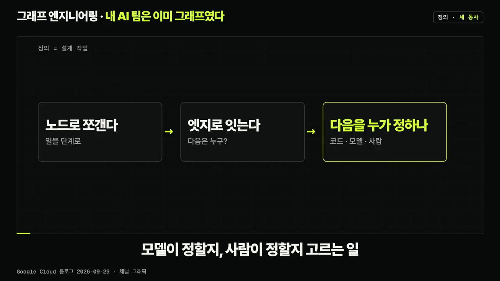
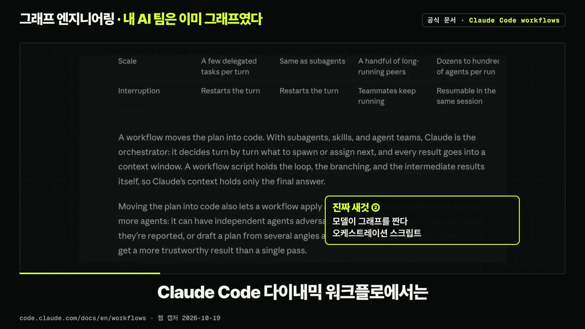
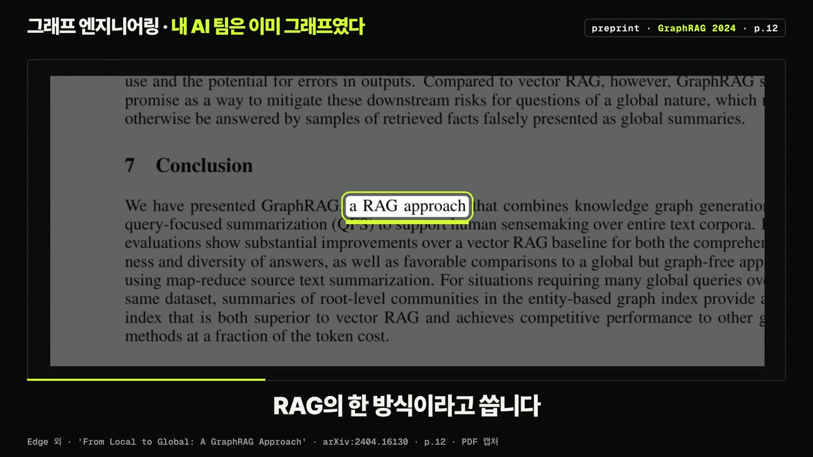
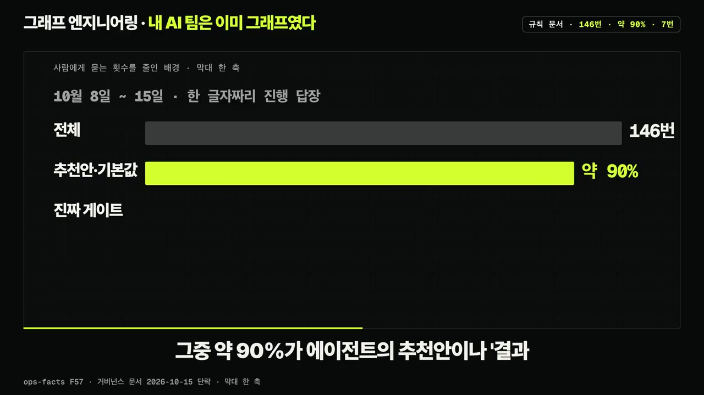
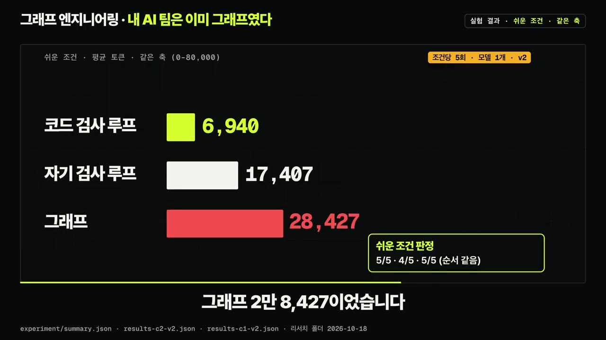
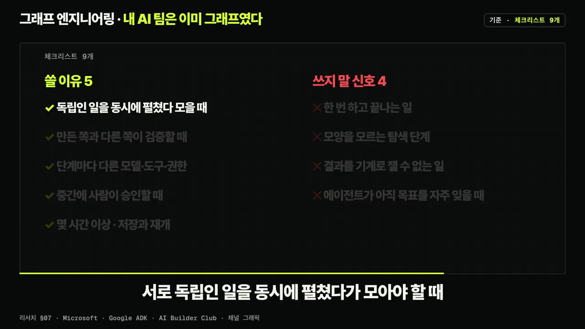
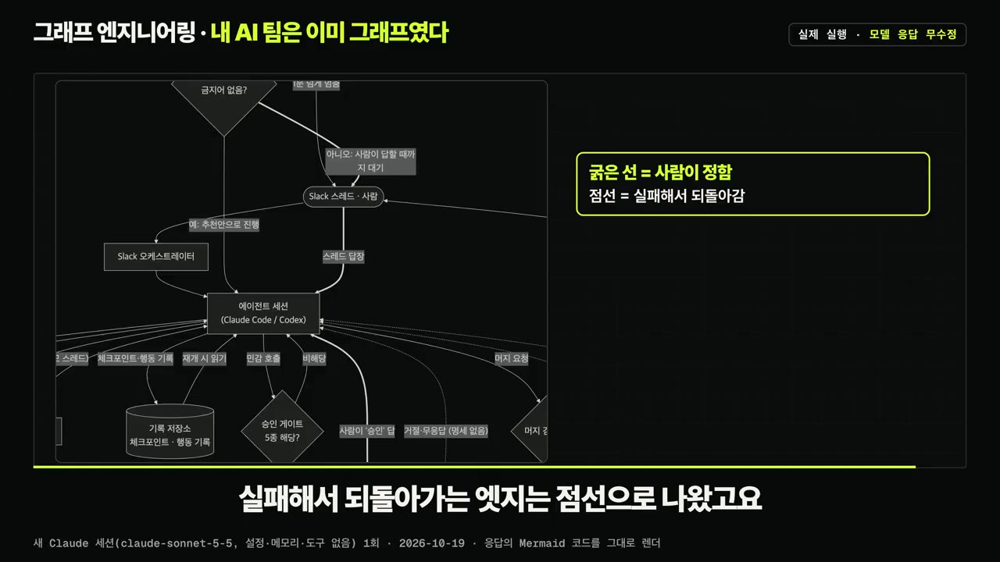

요즘 뜨는 그래프 엔지니어링, 대체 뭘까? | 정말 필요한지 직접 비교해 봤습니다
▶ 원본 영상 보기한눈에 보기
- '그래프 엔지니어링'은 일을 노드로 쪼개고 엣지로 이은 뒤, 다음 단계를 코드·모델·사람 중 누가 정할지 고르는 설계 작업이다(구글 클라우드 정의).
- 새 기술이 아니라 프롬프트→컨텍스트→하네스→루프를 안에 품는 '양파의 바깥층'이며, 루프도 되돌아가는 화살표 하나짜리 가장 작은 그래프다.
- "앤트로픽이 발표했다", "1000배 개선", "정확도 18%↑·비용 85%↓" 같은 이야기는 거짓이거나 다른 맥락의 숫자다. 이런 숫자는 세 가지 질문으로 확인한다.
- 같은 과제로 비교한 실험에서는 코드 검사 루프가 가장 싸고 안정적이었고, 그래프는 정확도는 같았지만 토큰을 4배 넘게 썼다.
- 기본은 루프 하나, 쓸 이유 5가지 중 둘 이상일 때만 그래프로 나누고, 구조를 늘리기 전에 결과를 코드로 검사하는 검사기부터 만든다.
이런 분께 도움이 됩니다
- Claude Code·Codex 같은 AI 에이전트로 작업 흐름(하네스)을 짜고 있는데, 구조를 더 복잡하게 만들어야 할지 고민하는 분.
- 새 유행어와 화려한 숫자에 휩쓸리지 않고 판단 기준을 갖고 싶은 분.
- 내 하네스를 한 장의 설계도로 그려 보고 빈 곳을 찾고 싶은 분.
핵심 내용
그래프 엔지니어링의 정의
- 구글 클라우드 블로그(9월 29일)의 정의가 가장 깔끔하다: 일을 노드로 쪼개고 엣지로 잇고, 다음 단계를 코드가 정할지·모델이 정할지·사람이 정할지 고르는 설계 작업. (0:15)
- 쉽게 말해 AI에게 일을 나눠 맡길 때 어디를 코드로 묶고 어디를 AI에게 맡길지 정하는 설계.

이름의 출처와 '양파' 구조
- 누가 발표한 용어가 아니라 X(옛 트위터)의 농담과 패러디에서 번졌다. (0:38)
- 2026년 7월 18일 피터 스타인버거가 "아직 루프 얘기 중이야? 아니면 이제 그래프로 넘어갔어?"라고 올렸고 313만 회 조회.
- 같은 날 하멜 후세인이 "루프 엔지니어링은 죽었다, 그래프 엔지니어링이 온다"라는 X 아티클을 올렸는데, 본문은 움직이는 짤 하나와 마침표 하나뿐인 패러디.
- 지난 몇 년간 이름은 이렇게 이어졌다.
- 프롬프트 엔지니어링
- 컨텍스트 엔지니어링
- 하네스 엔지니어링
- 루프 엔지니어링
- 그래프 엔지니어링
- 1프롬프트 엔지니어링
2023년 무렵
- 2컨텍스트 엔지니어링
2025년 6월
- 3하네스 엔지니어링
2025년 10월 ~ 2026년 2월
- 4루프 엔지니어링
2026년 3월 ~ 6월
- 5그래프 엔지니어링
2026년 7월 (1:09)
- 새 이름이 옛 이름을 대체하는 계단이 아니라 바깥층이 안쪽 층을 품는 양파다.
- 루프는 "언제까지 다시 할지", 그래프는 "루프 여러 개를 어떤 순서와 조건으로 이을지"를 묻는다.
- XState를 만든 데이비드 크루시드(자막 표기)의 말처럼 루프도 그래프다 — 되돌아가는 화살표가 하나 있는 가장 작은 그래프. (1:45)
- 그래프 안의 노드 하나는 여전히 루프이고, 그 안에 하네스·컨텍스트·프롬프트가 다 들어 있다.
💡 "루프는 죽었다"는 틀린 말 — 그래프는 루프를 품는 바깥층일 뿐이다.
퍼진 이야기 세 개 팩트체크
| 퍼진 이야기 | 판정 | 근거 |
|---|---|---|
| 앤트로픽이 그래프 엔지니어링을 발표했다 | 거짓 | Claude 공식 문서 어디에도 이 말이 없음 |
| 앤트로픽 시니어 두 명이 카파시의 루프를 1000배 개선했다는 PDF | 거짓 | 표지에 '앤트로픽과 관계없음'이라고 적혀 있고 1000배 측정은 어디에도 없음 |
| 그래프로 정확도 18% 상승, 비용 85% 절감 | 맥락 왜곡 | 숫자는 실제 논문에 있지만 공장 도면 한 장에 질문 19개로 잰 것이고, 두 숫자의 비교 대상도 다름. 게다가 제어 그래프가 아니라 지식 그래프(그래프 RAG) 쪽 숫자 |
- 이런 숫자를 보면 세 가지만 묻는다: ① 어떤 그래프인가? ② 무엇과 비교했나? ③ 숫자는 어디서 왔나? (2:42)
노드·엣지·상태 — 식당 주방으로 보면
| 개념 | 식당 비유 | 뜻 |
|---|---|---|
| 노드 | 주문 받기·요리·검수·서빙 | 일 하나. 안에서 일하는 건 사람·AI·코드 누구든 될 수 있음 |
| 엣지 | "요리가 끝나면 검수로, 떨어지면 다시 요리로" | 다음은 누구냐는 규칙. 되돌아가는 화살표가 루프, 여러 일을 동시에 시작했다 한 접시로 모으는 것도 엣지 |
| 상태 | 주문서(서류철) | 모든 노드가 보고 고치는 기록. 무엇을 적고 어떤 형식으로 넘길지 정해야 함 |
- 상태는 셋 중 가장 자주 빠지는 개념이고, 뒤의 실험에서 그래프가 깨진 곳도 여기였다. (3:15)
- 설계의 핵심은 각 엣지를 누가 정하느냐다.
- 검수 통과를 정해진 규칙으로 가르면 → 코드가 정함
- AI가 판단하게 두면 → 모델이 정함 (3:30)
이름만 새것, 진짜 새것 두 가지
- 노드와 엣지로 일을 엮는 건 워크플로 엔진에서 오래 써 온 생각이다. 랭체인도 7월 22일 블로그에서 "새로운 생각이 아니다"라고 직접 썼다(이 이름으로 득을 볼 회사가 한 말이라는 점도 참고).
- 그래도 진짜 새것은 두 가지다. (3:55)
- 노드 하나가 에이전트 하나 전체가 됐다: 예전 노드는 코드나 LLM 호출 한 번이었지만, 이제 노드 안에서 도구를 쓰고 스스로 반복하는 에이전트가 돈다.
- 모델이 그래프를 짜기 시작했다: Claude Code 다이나믹 워크플로(자막 표기)에서는 모델이 오케스트레이션(여러 에이전트를 지휘하는) 스크립트를 써서 서브 에이전트들을 돌린다. 문서 표현: "워크플로는 계획을 코드로 옮긴다."

- 그래서 사람은 노드를 하나하나 그리는 대신 경계를 정한다 — 어떤 권한을 주고, 어디서 검증하고, 어디서 사람이 승인하고, 예산은 얼마인지. (4:25)
'그래프'의 네 가지 뜻
튜링 포스트와 AI Builder Club의 구분을 따른다.
| 종류 | 무엇 | 노드 / 엣지 | 비고 |
|---|---|---|---|
| ① 제어 그래프 | 일의 흐름도 | 단계·에이전트 / 다음 단계 | 그래프 엔지니어링이 가리키는 것, 이 영상의 그래프 |
| ② 지식 그래프 | 정보의 관계도 | 사실·개체 / 관계 | 그래프 RAG가 여기 속함. 18%·85%도 이쪽 숫자 |
| ③ 실행 기록(트레이스) | 실제로 돌아간 경로를 나중에 그린 기록 | — | 디버깅과 평가용 |
| ④ 개선 그래프 | 루프 여러 개가 서로 감시하고 고치게 하자는 생각 | — | 카를 페레스(자막 표기)의 제안, 본인이 나중에 '그래프'라는 단어 선택이 틀렸다고 인정 |
- "그래프 엔지니어링이 RAG(검색해서 답에 붙이는 방식)를 대체한다"는 범주가 틀린 말이다. (5:05)
- 마이크로소프트 논문도 그래프 RAG를 RAG의 한 방식이라고 쓴다.
- RAG는 '무엇을 보여 줄지'(컨텍스트 층의 일), 제어 그래프는 '일의 순서'다. 그래프의 노드 하나가 여전히 RAG를 쓸 수 있다.

💡 '그래프'라는 말을 보면 네 가지 중 무엇인지부터 표시하라 — 오해 대부분이 거기서 풀린다.
실제로 돌아가는 AI 제작 팀의 그래프
이 채널의 제작 환경(Mac mini 한 대, Slack을 입구로 Claude Code·Codex 세션 여러 개)을 운영 기록 기준으로 다시 그린 재연 화면이다. 숫자는 10월 19일 확인 시점 값.
- 노드 = 세션 하나하나: 총 32개 — Claude Code 에이전트 15개, Codex 2개, 렌더처럼 긴 명령을 돌리는 잡(job) 여러 개, 종류 표시 없는 세션 4개. (5:58)
- 엣지 ① 잡 → 에이전트 깨우기: 오래 걸리는 일은 잡으로 넘기고, 잡이 끝나면 결과(종료 코드·로그 경로·로그 마지막 줄)가 기다리던 에이전트 세션에 한 줄로 입력된다.
- 에이전트는 기다리며 상태를 확인하지 않고 턴을 끝냈다가, 결과가 들어오면 다시 깨어난다.
- 잡 기록 908개 중 896개에 깨울 세션이 적혀 있었다.
- 엣지 ② 팬아웃·팬인: 작업 하나에 Slack 스레드 하나가 '레인'처럼 붙고, 보조·리뷰 세션은 부모의 레인을 물려받는다. 펼쳤던 일이 한 스레드로 다시 모인다.
- 상태 = 공유 기록 저장소:
- 체크포인트: 목표, 끝낸 일, 증거, 가정, 다음 할 일
- 행동 기록: 한 일, 되돌리는 방법, 같은 일을 두 번 하지 않게 막는 중복 방지 키
- 검증 노드: 에이전트는 자기 PR을 사람 승인 없이 main에 머지할 수 있지만, 그 길은 '세이프 머지' 스크립트 하나뿐이다. (7:12)
- 머지하는 세션이 스스로 남긴 리뷰는 세지 않는다. 리뷰는 다른 세션이 해야 한다.
- 규칙이나 게이트 코드를 바꾸는 변경은 독립 리뷰 2개가 필요하다.
- 배포가 붙은 저장소는 머지 뒤 배포를 최대 30분 기다리고, 헬스 체크 3번에 실패하면 자동으로 되돌린다.
- 사람 승인 엣지는 다섯 가지뿐: ① 월 예산을 넘는 지출 ② 다른 사람에게 가거나 본인 이름으로 나가는 메시지 ③ 되돌릴 수 없는 삭제 ④ 계정 보안 ⑤ 규칙을 느슨하게 하는 변경.
- 여기에 걸리면 Slack 승인 카드가 올라오고, 그 카드 스레드에 '승인'이라고 답해야 같은 호출이 한 번 통과한다.
- 승인 여부는 모델이 아니라 코드가 Slack이 붙인 사용자 정보로만 판정한다.
- 사람에게 묻는 횟수를 줄인 이유: 10월 8~15일 한 주에 한 글자짜리 진행 답장이 146번 있었는데, 약 90%가 에이전트 추천안이나 "결과 보내 줘" 같은 기본값 선택이었고 진짜 게이트는 7번이었다.
- 규칙 문서: "내가 병목이 되는 걸 피해 줘." 새 위험은 승인 목록에 더하지 말고 자동 검사로 막는다 → 사람 노드 대신 검증 노드를 늘리는 설계.

- 감시 루프: 1분마다 감시 프로그램이 세션 보드와 레인 카드를 갱신하고, 1분 넘게 프롬프트 앞에서 멈춘 에이전트를 스레드에 보고한다. (8:43)
- 프롬프트에 대신 답하지는 않는다.
- 에이전트가 추천안을 내고 턴을 끝냈는데 3분간 다른 답이 없으면 "그 추천안으로 진행하라"는 문장을 대신 입력한다. 단, 결정이 필요한 질문이거나 삭제·결제·권한·머지 같은 게이트성 단어가 있으면 하지 않는다.
💡 규칙으로 정한 건 노드 하나하나가 아니라 경계다 — 어디서 검증하고, 어디서 사람이 멈추고, 무엇을 기록하고, 무엇을 자동으로 넘길지.
실험: 루프 vs 그래프
- 과제: 출처 문서를 읽고 "앤트로픽이 발표했나?", "18%와 85%는 어디서 왔나?" 같은 질문에 문서를 글자 그대로 인용해 답하기. 모델은 Claude Haiku 5.5 하나, 문서·질문·채점기 동일, 바꾼 것은 구조뿐. 실험은 AI 에이전트가 설계·실행했다. (9:21)
- 비교한 세 구조
- 자기 검사 루프: 답하고 같은 모델이 스스로 검사해 고침
- 코드 검사 루프: 답하면 코드가 인용문이 문서에 정말 있는지 검사해 틀린 줄을 돌려줌(카파시의 오토리서치와 같은 모양)
- 그래프: 문서마다 조사 에이전트가 병렬로 근거 찾기 → 코드 검사(실패하면 그 조사로 한 번 되돌림) → 작성 에이전트가 답 쓰기 → 마지막 코드 관문
- 결과(조건당 5회 평균) (10:30)
| 구조 | 어려운 조건 | 쉬운 조건 |
|---|---|---|
| 코드 검사 루프 | 5/5 · 8.3초 · 16,688토큰 | 5/5 · 6.9초 · 6,940토큰 |
| 자기 검사 루프 | 4/5 · 18.8초 · 34,473토큰 | 4/5 · 16.7초 · 17,407토큰 |
| 그래프 | 5/5 · 53.3초 · 73,692토큰 | 5/5 · 18.5초 · 28,427토큰 |
- 그래프는 코드 검사 루프의 4배 넘는 토큰을 썼다. 코드 검사 루프는 10번 모두 첫 답이 바로 통과했고, 단계를 더하면 비용이 늘거나 오류가 새로 생겼다.

- 실패 해부 (11:16)
- 자기 검사 루프: 첫 답은 맞았는데 검사 단계가 답을 태그로 감싸거나 목록 기호를 빼서 망가뜨렸고, 모델 스스로 "문제없다"고 판정했다.
- 그래프(첫 버전, 어려운 조건 1회): 조사 노드가 근거를 찾고 코드 검사도 통과했지만, 작성 노드에 따옴표로 감싼 텍스트로 넘기자 인용문 안의 따옴표 때문에 작성 노드가 "인용할 원문이 없다"고 답했다. → 상태 형식 문제.
- 상태를 JSON으로 넘기고 중복을 없앤 두 번째 버전은 10번 모두 통과.
- 한계
- 조건당 5회, 모델 1개, 정답이 분명한 사실 질문뿐. 문서 수백 개 병렬 처리나 사람 승인처럼 그래프가 이길 만한 상황은 없었다.
- 코드 검사 루프와 그래프 v2는 첫 실행 결과를 본 뒤 더한 사후 수정이라 공정한 비교의 근거로는 약하다. 첫 실행(v1) 어려운 조건에서는 그래프 4/5 · 45.6초 · 71,270토큰, 자기 검사 루프 5/5 · 19.9초 · 37,651토큰이었다(설명란).
- 그래서 결론은 "그래프는 쓸모없다"가 아니라 "검사기를 먼저 만들고 그다음 구조를 고민하라"까지.
- 논문도 같은 방향: TCS 논문(자막 표기)의 제거 실험에서 검사 루프(자막상 불분명)를 빼자 완료율이 95.0%에서 12.9%로 떨어졌다.
💡 이 과제에선 모델의 첫 답이 충분히 좋았다 — 구조보다 코드 검사기가 비용 대비 효과가 컸다.
언제 그래프를 쓸까 — 체크리스트
- 블로그와 벤더 문서 수십 개의 기준이 거의 같다: 기본은 루프 하나, 이유가 있을 때만 그래프. (12:33)
| 쓸 이유 5가지 | 쓰지 말 신호 4가지 |
|---|---|
| ① 서로 독립인 일을 동시에 펼쳤다가 모아야 할 때 | ① 한 번 하고 끝나는 일 |
| ② 만든 쪽과 다른 쪽이 독립적으로 검증해야 할 때 | ② 아직 모양을 모르는 탐색 단계의 일 |
| ③ 단계마다 다른 모델·도구·권한이 필요할 때 | ③ 결과가 맞는지 기계로 잴 방법이 없는 일 |
| ④ 중간에 사람이 승인해야 할 때 | ④ 에이전트 하나가 아직 목표를 자주 잊을 때 |
| ⑤ 몇 시간 이상 걸려 중간 저장과 재개가 필요할 때 |
- 다른 기준들 (13:14)
- 마이크로소프트: 함수로 처리할 수 있으면 AI 에이전트 대신 함수를 써라.
- 구글: 흐름을 분명하게 그릴 수 있으면 정해진 코드로 가라.
- AI Builder Club: 네 가지 질문에 '예'가 하나 이하면 "그래프 그림을 입은 루프"다(네 가지 질문의 내용은 자막상 불분명).

비용과 반대 증거
- 앤트로픽의 멀티 에이전트 리서치 시스템은 내부 평가에서 단일 에이전트보다 성능이 90.2% 높았지만, 토큰은 채팅의 약 15배를 썼다. (13:31)
- 구글·MIT 연구: 에이전트 하나의 성능이 이미 45%를 넘는 과제에서는 에이전트를 더 붙이면 오히려 손해였고, 순서대로 조건을 맞춰야 하는 계획 과제에서는 멀티 에이전트가 단일 에이전트보다 39~70% 낮았다. (13:45)
- 그래프를 더하면 상태 관리, 연결 규칙, 디버깅할 거리, 일이 깨질 수 있는 자리가 함께 늘어난다.
💡 그래프는 공짜가 아니다 — 성능이 오를 때도 비용은 몇 배로 뛴다.
따라 해보기
준비물
- Claude 또는 ChatGPT (영상 실행 예시는 새 Claude 세션, Sonnet 5.5, 설정·메모리·도구 없음)
- 내 에이전트 하네스 설명: 설정 파일, 규칙 문서, 작업 흐름 설명
- Mermaid 그림을 볼 곳 (보충: Mermaid를 지원하는 마크다운 뷰어나 Mermaid 편집기 사이트)
- 소요 시간: 10~20분 정도 (보충: 영상에 언급 없음)
단계별 방법
- 하네스 자료 모으기
- 새 세션 열기
- 프롬프트 붙여 넣기
- 결과 확인
- 그림 그리기
- 빈 곳 고치기
- 1하네스 자료 모으기
지금 쓰는 설정 파일, 규칙 문서(CLAUDE.md 같은 것), 작업 흐름 설명을 한곳에 모은다. 토큰·계정 정보는 빼고 일반 명칭으로 바꾼다(영상 예시도 토큰·채널 ID·계정 정보를 넣지 않음).
- 2새 세션 열기
Claude나 ChatGPT에서 새 대화를 연다.
- 3프롬프트 붙여 넣기
아래 프롬프트의 ○○ 자리에 1단계 자료를 그대로 붙여 넣어 보낸다. (14:38)
- 4결과 확인
표 1개, Mermaid 코드 1개, 빈 곳 3줄이 왔는지 확인한다.
- 5그림 그리기
Mermaid 코드를 뷰어에 붙여 그림으로 본다(보충). 굵은 선은 사람이 정하는 엣지, 점선은 실패하면 되돌아가는 엣지.

모델이 돌려준 Mermaid 그림: 굵은 선=사람이 정함, 점선=실패해서 되돌아감 · ▶ 15:25 - 6빈 곳 고치기
'검사 없이 넘어가는 엣지'에 코드 검사기를 붙이고, '사람이 너무 자주 멈추는 곳'은 돈·외부 메시지·삭제·계정처럼 꼭 필요한 곳만 남긴다.
3단계에 입력할 내용 (설명란 원문)
내 에이전트 하네스 설명: ○○ (설정 파일, 규칙 문서, 작업 흐름 설명을 그대로 붙여 넣기)
이 하네스를 그래프로 설계도처럼 정리해 줘.
1. 노드(일 하나: 에이전트, 스크립트, 검사, 사람 승인), 엣지(다음은 누구, 어떤 조건에서), 상태(노드 사이에 넘기는 기록)를 표로 뽑아 줘.
2. 엣지마다 다음 단계를 누가 정하는지 적어 줘: 코드 / 모델 / 사람.
3. 전체를 Mermaid flowchart 하나로 그려 줘. 사람이 정하는 엣지는 굵은 선, 실패하면 되돌아가는 엣지는 점선으로.
4. 그림 아래에 빈 곳을 세 줄로 적어 줘: 검사 없이 넘어가는 엣지, 사람이 너무 자주 멈추는 곳, 기록이 안 남는 상태.
완료 기준: 표 1개, Mermaid 코드 1개, 빈 곳 3줄.
설명만 해 주고, 실제로 실행하거나 설정을 바꾸지는 마.
따라 할 수 있는지 점검
- ✅ 바로 따라 할 수 있음: 2~4단계 — 프롬프트 원문이 설명란에 그대로 있고 완료 기준도 명확하다.
- ⚠️ 1단계 「하네스 자료 모으기」: 설정 파일에 API 키·봇 토큰이 들어 있을 수 있는데 영상은 빼는 방법을 따로 말하지 않음 → 붙여 넣기 전에 키·토큰·비밀번호 줄을 지우거나
***로 바꾼다(보충). - ⚠️ 5단계 「그림 그리기」: Mermaid 코드를 어디서 그림으로 보는지 영상에 안 나옴 → GitHub 마크다운이나 Mermaid 공식 편집기(검색: "Mermaid Live Editor")에 붙여 넣는다(보충).
- ⚠️ 6단계 「빈 곳 고치기」: 검사기를 실제로 어떻게 만드는지는 영상 범위 밖 → 영상 실험의 코드 검사 루프 예시(자료실의 실험 코드)를 참고한다.
확인 방법
- 응답에 표 1개, Mermaid 코드 1개, 빈 곳 3줄이 모두 있는지.
- 엣지마다 '코드/모델/사람' 중 하나가 적혀 있는지. 영상 예시에서는 엣지 20개 중 사람이 정하는 건 2개뿐이었다.
막히면
- 프롬프트 마지막 줄("실제로 실행하거나 설정을 바꾸지는 마")을 빼지 않는다 — 도구가 연결된 세션이면 설정을 건드릴 수 있다.
- 자료실(로그인 없음): https://careerhackeralex.com/sharings/graph-engineering-20261018 — 체크리스트, 실험 코드, 출처 전체.
기억할 숫자·인용
- 그래프 엔지니어링 정의 출처: 구글 클라우드 블로그 2026-09-29
- 피터 스타인버거 X 게시물(2026-07-18) 313만 회 조회
- 실험(어려운 조건): 코드 검사 루프 16,688토큰 vs 그래프 73,692토큰 — 4배 이상
- 진행 답장 146번 중 약 90%가 기본값 선택, 진짜 게이트는 7번
- 앤트로픽 멀티 에이전트: 성능 90.2%↑, 토큰 약 15배
- 구글·MIT: 단일 에이전트 성능 45% 이상이면 에이전트 추가가 손해, 계획 과제에서 멀티 에이전트 39~70% 낮음
- "루프도 그래프다 — 되돌아가는 화살표가 하나 있는 가장 작은 그래프."
- "내가 병목이 되는 걸 피해 줘." (채널 제작 환경 규칙 문서)
생각해볼 점
- 실험의 범위: 영상도 밝혔듯 조건당 5회, 모델 1개, 정답이 분명한 사실 질문뿐이고 비교 대상 일부가 사후 수정판이다. v1에서는 오히려 자기 검사 루프가 5/5였으니, "코드 검사 루프가 가장 낫다"는 이 과제에 한한 결론으로 보는 게 맞다.
- 운영 사례의 성격: 제작 환경 화면은 운영 기록을 바탕으로 한 재연이다. 사람 승인 5가지, 감시 루프의 '3분 뒤 추천안 자동 진행' 같은 설계는 참고할 만하지만, 개인 환경에서 그대로 쓰면 자동 진행 범위를 더 좁혀야 할 수 있다(내 의견).
- '쓸 이유 둘 이상' 기준: 영상 마무리의 "5가지 중 둘 이상일 때만 그래프"와 AI Builder Club의 "네 가지 질문 중 예가 하나 이하면 루프"는 비슷하지만 같은 기준은 아니다. 자료실 원문으로 질문 목록을 확인해 볼 필요가 있다.
바로 해볼 일
- 위 프롬프트로 지금 쓰는 하네스를 그래프로 그려 보고, '검사 없이 넘어가는 엣지'를 하나 찾는다.
- 내 하네스에서 노드 사이에 넘기는 기록(상태)이 어떤 형식(텍스트·JSON 등)으로 넘어가는지 확인한다.
- 구조를 늘리기 전에, 결과 하나를 코드로 검사하는 간단한 검사기를 먼저 만든다.